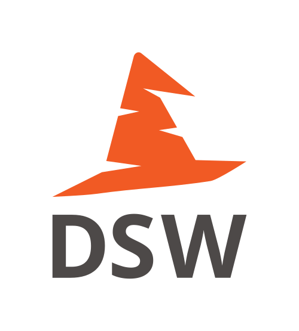

This webpage is a working platform for the 1-year project (October 2023-2024) Data Management Plans: Support package for Norwegian higher education libraries . The project is led by the University of Bergen with contributors from the Norwegian University of Science and Technology, the Univesity of Oslo, UiT The Arctic University of Norway, PhD-On-Track, and ELIXIR Norway. The project is supported by the National Library of Norway.
All project results are available under an open license. Text resources are maintained through an open contribution and maintenance process. A translation of the user-directed resources to Norwegian is planned at a later timepoint.
More information
Project page
More information about the project Data Management Plans: Support package for Norwegian higher education libraries.
The info page includes an overview about project results, presentations about the project, and a newsletter.
Project background
The project follows up on a recommendation on better and aligned Data Management Planning guidance in a collaborative project by the University libraries in Bergen, Oslo, Tromsø and Trondheim.
The report UB-BOTT-samarbeid om datahåndteringsplaner: kartlegging og anbefalinger was published in December 2022. An update Oppdatering på UB-BOTT-samarbeid om datahåndteringsplaner was published in April 2024.
Find experts
Get support from local and disciplinary data management experts.
Project results
Knowledge base for support staff
A knowledge base including annotation of the Science Europe Practical Guide to the International Alignment of Research Data Management in the Norwegian context
Short texts for use in digital DMP tools
Implemented as discipline-agnostic knowledge model and connected questionnaires/templates in the DMP-tool Data Stewardship Wizard (DSW). A set of guiding questions to aid researchers and research advisors with considerations in the pre-award phase was developed as an additional module.
Supplementing information resources for researchers and students
Information pages for users accompanying the DMP questionnaires.
Welcome with your contributions!
dHMp norge is an open resource created by the University libraries at UiB, NTNU, UiO, UiT, ELIXIR Norway and PhD-on-Track. Everyone is welcome to contribute to this community project or suggest improvements! To cite dHMp, please use the following format:
Datahåndteringsplaner: støttepakke for norske UH-bibliotek. URL: https://github.com/DHP-stottepakke